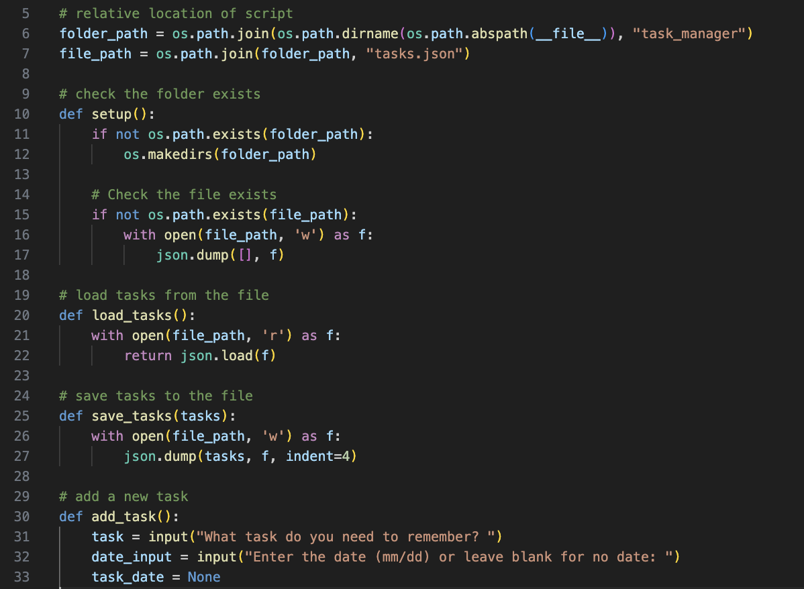
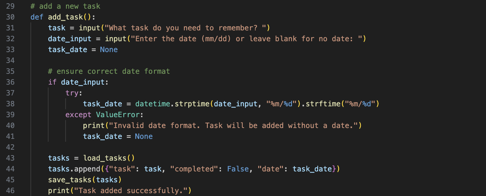
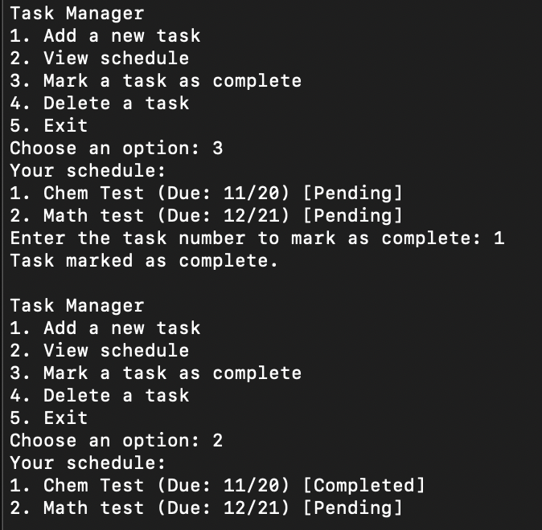

Task Manager Script Specifics
Step 1: Creating the JSON File
The hardest part of the task manager was making sure you could run it in your own python environment as well. Here you can see I decided that wherever the task manager script is stored on your device is where the list of tasks will be stored.
Step 2: Mastering CSS
Here is an example of one of the functions I created. Many of the scripts functions follow a similar format as this.
Step 3: Diving into JavaScript
Finally here is an example of what the task manager can do! Please feel free to test the script yourself. If not able to run it in your local terminal, Google Colab I find is the best place to run scripts.